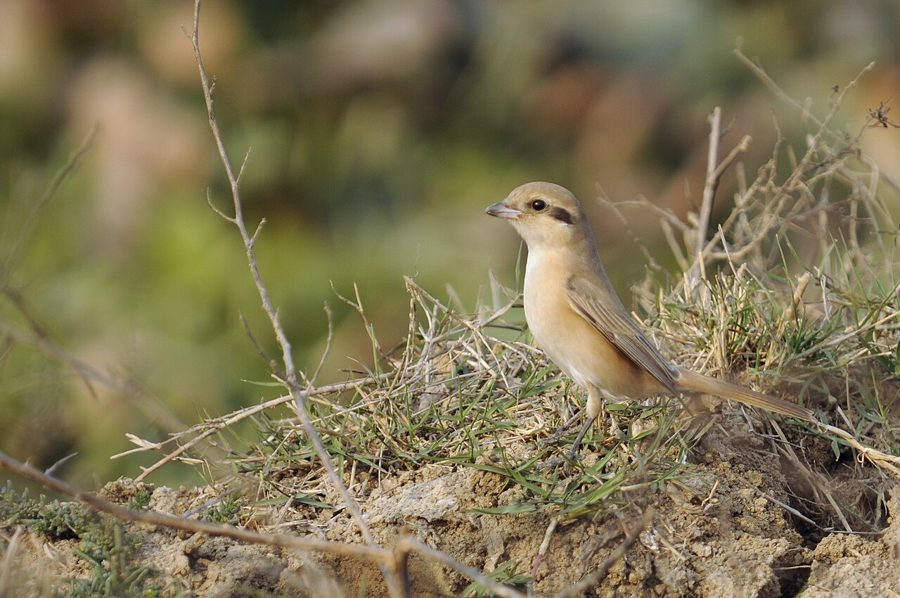

इसाबेलीन श्राइकIsabelline Shrike
Lanius isabellinus · Laniidae · BRD-0247

- Scientific name वैज्ञानिक नाम
- Lanius isabellinus Eversmann, 1844
- Family कुल
- Laniidae
- Hindi हिंदी
- इसाबेलीन श्राइक
- Local names स्थानीय नाम
- isabelline shrike, shrike
- Status here यहाँ की स्थिति
- native
- Movement आवागमन
- Winter visitor
- Known from कहाँ दर्ज
- Others have published records from the Basti–Ayodhya districts बस्ती–अयोध्या के ज़िलों से दूसरों के प्रकाशित अभिलेख
- IUCN IUCN
- LC
- Review समीक्षा
- audited and independently read
When to look कब देखें
Winter visitor शीतकालीन प्रवासी. Expected mainly in October, November, December, January, February, March, April, May. मुख्यतः अक्टूबर, नवंबर, दिसंबर, जनवरी, फ़रवरी, मार्च, अप्रैल, मई में अपेक्षित।
Arrives in October–November from breeding grounds in central Asia (Kazakhstan, Uzbekistan, Afghanistan); departs by April–May. Ali & Ripley (1968) and Handbook of the Birds of the Western Palearctic document timing across India. All migrants and visitors →
Uses and possibilities उपयोग और संभावनाएँ
Drawn from the documented uses in the profile below, where each is labelled traditional, current or a research lead. All uses →
Tell it apart from इनसे अलग पहचानें
इसाबेलीन श्राइक / Isabelline Shrike
Lanius isabellinus Eversmann, 1844 — Laniidae
इसाबेलीन श्राइक — यह सर्दियों में मध्य एशिया से आने वाली एक हल्के रंग की शिकारी चिड़िया है जो पूर्वी उत्तर प्रदेश के खुले खेतों और झाड़ीदार इलाकों में अक्टूबर से मई तक दिखती है। इसकी पीली-भूरी रंग, नुकीली चोंच और तेज़ नज़र इसे छोटी चिड़ियों और छिपकलियों का कुशल शिकारी बनाती है। यह एक अकेली, साहसी शिकारी है जो खुली जगहों पर बैठकर शिकार की प्रतीक्षा करती है।
Quick Identification त्वरित पहचान
| Feature | Description |
|---|---|
| Size | Small shrike; 17–19 cm long |
| Crown and back | Pale rufous-buff to sandy brown |
| Underparts | Pale buff-white |
| Lores and eye-stripe | Black, but less prominent than in Brown Shrike |
| Tail | Relatively long; dark |
| Behaviour | Perches prominently on bushes and wires; hunts from exposed vantage |
| Call | Harsh churring and chatter |
Field tip: In open cultivation and scrub grassland, look for a pale sandy-brown shrike perching upright on a prominent post, bush, or wire. The pale (not rusty) back and less prominent eye-stripe distinguish it from the Brown Shrike. It hunts small birds, insects, and occasionally small reptiles. Solitary or in pairs.
हिंदी — कैसे पहचानें:
छोटा शिकारी; पीला-भूरा रंग।
खुली जगहों पर बैठता है।
आँख की पट्टी होती है लेकिन कम गहरी।
कठोर आवाज़।
Morphology आकारिकी
Biometrics:
| Measurement | Range |
|---|---|
| Total length | 170–190 mm |
| Wing (flattened chord) | 88–98 mm |
| Tail | 75–90 mm |
| Bill | 16–18 mm (hooked, strong) |
| Tarsus | 20–23 mm |
| Weight | 32–48 g |
Size: 17–19 cm long; wingspan 27–30 cm. Weight 32–48 g. A small but stocky shrike.
Plumage: Crown and nape pale buff to sandy brown, sometimes with a faint rufous wash. Lores and eye-stripe black, but less prominent than in Brown Shrike; sometimes only lores are black. Back pale buff-brown to sandy brown, slightly warmer in fresh plumage. Rump and upper tail-coverts paler. Throat white. Breast, belly, and underparts pale buff to white, sometimes with faint peachy wash on breast. Wings dark brown with paler feather edges and pale buff fringes to secondaries. Tail dark, relatively long, slightly graduated. Undertail-coverts buff or white.
Bill: Strong, hooked, dark; perfect for predatory feeding.
Legs and feet: Dark grey to black; strong, suited for perching.
Eyes: Dark, with less prominent loral stripe than related species.
Sexual dimorphism: Minimal; females slightly duller.
Juveniles: Browner, with less defined eye-stripe; buffer on underparts.
Vocalisations. Call repertoire:
- Alarm and contact call: Harsh chack or chaak, sometimes repeated as chack-chack-chack; frequency around.
- Song: Harsh warbling and chattering, with some melodious notes interspersed; less musical than some shrikes.
- Prey-alarm call: Loud, sharp calls when striking at prey.
हिंदी: कठोर "चैक-चैक" आवाज़। शिकार करते समय तेज़ आवाज़ निकालता है।
Behaviour & Ecology व्यवहार और पारिस्थितिकी
Predatory small-bird and insect hunter: Isabelline Shrikes feed on a variety of small prey:
- Small birds (warblers, sparrows, munias)
- Large insects (grasshoppers, crickets, beetles)
- Spiders
- Occasionally small lizards and geckos
Hunting method: Perch prominently on a bush, post, or wire, scanning surroundings with alert posture. Pounce on prey from perch, striking with powerful bill and talons. Some prey items impaled on thorns ("shrike larder").
Habitat use: Prefers open or semi-open habitats with scattered perches. Avoids dense forest and heavily cultivated areas without bushes.
Social behaviour: Solitary or in pairs; territorial. Males sometimes hold winter territories and return to same perches throughout the season.
Predators: Larger raptors (eagles, falcons) may prey on shrikes; corvids may harass.
हिंदी: अकेला या जोड़ी में रहता है। खुली जगहों पर बैठकर शिकार करता है। छोटी चिड़ियों, छिपकलियों और बड़े कीड़ों को पकड़ता है।
Life Cycle / Phenology जीवन चक्र
Winter visitor: Absent during breeding season (April–August); returns to eastern UP from October and remains through May.
Arrival and departure: First birds arrive in mid-October; numbers peak in December–February; departure begins in April, with most birds gone by May.
Breeding: Occurs in breeding grounds (central Asia) during April–August. Does not breed in India.
Moult: Partial moult before arrival; pre-breeding moult on breeding grounds.
Roosts: Nocturnal roosts in bushes or low trees; solitary roosting.
हिंदी: अक्टूबर में आता है, अप्रैल तक रहता है। अपने देश में ही अंडे देता है। झाड़ियों पर रात बिताता है।
Host Plants or Prey आहार
| Prey Type | Examples | Feeding Behaviour |
|---|---|---|
| Small birds | Warblers, sparrows, munias | Strike from perch; prey impaled or carried away |
| Large insects | Grasshoppers, crickets, beetles | Strike or catch in flight |
| Spiders | Web-dwelling species | Pick from vegetation or webs |
| Small reptiles | Geckos, small skinks | Occasionally; strike from perch |
हिंदी: छोटी चिड़ियों, कीड़ों और छिपकलियों का शिकार करता है। झाड़ी पर बैठकर शिकार करता है।
Predators / Natural Enemies शत्रु
- Avian predators: Black Kite, sparrowhawks, Peregrine Falcon
- Parasites: Avian ectoparasites, internal helminths
हिंदी: बड़ी शिकारी चिड़ियाँ इसका शिकार करती हैं।
Agricultural / Human Relevance कृषि प्रासंगिकता
Pest control: Beneficial species; feeds on grasshoppers, crickets, and other large insect pests, as well as small rodents (occasionally). Helps control agricultural pest insects.
Protected status: Protected under the Wildlife (Protection) Act 1972. Hunting and trade are prohibited.
Cultural note: Shrikes are respected hunters in some local traditions; the word "latora" (or "latowa") in Hindi/Bhojpuri likely derives from the shrike's hunting prowess.
हिंदी: यह विधि अधिनियम 1972 के अंतर्गत संरक्षित है। खेतों में कीटों को नियंत्रित करता है।
Expected Locally स्थानीय रूप से अपेक्षित
Not a field record. Written from published accounts for eastern Uttar Pradesh. No confirmed local sighting yet — if you have seen it, that is what the atlas needs.
अभी तक स्थानीय पुष्टि नहीं। यह विवरण प्रकाशित स्रोतों से है, किसी अवलोकन से नहीं।
This species is NOT a field record. The distribution below is based on published sources describing where Isabelline Shrikes should be looked for in the Basti–Ayodhya region.
Winter range: Expected in eastern Uttar Pradesh from October to May. Open and semi-open habitats with scattered bushes, including cultivation margins, scrub grassland, and wasteland are preferred.
Habitat preference: Sparsely vegetated areas with scattered perches (bushes, posts, wires); avoids dense vegetation and heavy forest.
Peak occurrence: December–February, when wintering populations are present.
GBIF records: GBIF holds published records from these districts in the core region.
What a first record would be: A dated photograph showing the bird clearly in a specific location (with GPS coordinates and date) submitted through the About page of this atlas.
हिंदी: यह पक्षी स्थानीय रूप से अपेक्षित है, न कि देखे गए बतौर प्रेक्षण। अक्टूबर से अप्रैल तक खुले खेतों और झाड़ीदार इलाकों में दिखता है। पहला रिकॉर्ड के लिए स्पष्ट फोटोग्राफ और तारीख चाहिए।
Distribution वितरण
Global range: Central Asia (Kazakhstan, Uzbekistan, Afghanistan, parts of China) as breeder; non-breeding range extends to the Indian subcontinent, Middle East, and parts of Africa.
In India: Distributed throughout India as a winter visitor (October–May) in open and semi-open habitats.
In Uttar Pradesh: Widespread winter visitor in cultivation areas and scrub habitats throughout the state.
In Basti district / eastern UP: Regular winter visitor in open cultivation and scrub grassland areas; present October to May with peak numbers December–February.
Research Questions शोध प्रश्न
- What are the precise breeding grounds and migration routes of populations wintering in eastern UP?
- How does diet composition vary seasonally between early winter (October–November) and late winter (February–April), and what factors determine prey choice?
- Do Isabelline Shrikes maintain individual winter territories, and how do territories relate to food availability and habitat structure?
- क्या खुले खेतों में बारहमासी फसलों के कारण इस श्राइक की वर्तमान उपस्थिति बदली है?
- How do Isabelline Shrikes select perching and hunting sites within heterogeneous winter habitats? (A child can map shrike locations and perch types.)
- क्या कीटनाशकों के इस्तेमाल से इस श्राइक की शिकार की संख्या में कमी आती है?
Similar Species मिलती-जुलती प्रजातियाँ
| Species | Key Difference | Hindi | Field Rule | |
|---|---|---|---|---|
| [[brown_shrike\ | Brown Shrike]] (Lanius cristatus) | Rusty-brown back; prominent black eye-stripe; darker overall | ब्राउन श्राइक | Brown Shrike is darker and rustier; Isabelline Shrike is paler buff-brown. Brown Shrike has a more prominent eye-stripe. |
| [[bay_backed_shrike\ | Bay-backed Shrike]] (Lanius vittatus) | Smaller (16–17 cm); bay-red back; restricted range | लाल पीठ वाली श्राइक | Bay-backed Shrike has a rusty-red back and is restricted to peninsular India; not expected in eastern UP. |
Field rule: Isabelline Shrike is distinguished by its pale sandy-buff to pale rufous plumage, less prominent eye-stripe, and relatively long tail. Brown Shrike is darker with rusty-chestnut back and more prominent eye-stripe. In the field, Isabelline Shrike appears paler and less boldly marked overall.
Taxonomy & Classification वर्गीकरण
Original description. The species was described by Eduard von Eversmann in 1844 as Lanius isabellinus. Type locality is the Aral Sea region (now Kazakhstan).
Subspecies. Two subspecies are recognized: L. i. isabellinus (Eversmann, 1844) occurs from central Asia to northern India (present in eastern UP), and L. i. aucheri (Hume, 1874) occurs in the Levant and Mesopotamia.
Family and order placement. Order Passeriformes; family Laniidae (shrikes). The genus Lanius contains typical shrikes, characterized by strong hooked bills and predatory feeding behaviour.
Phylogenetic notes. Isabelline Shrike is related to other Palearctic shrikes including Brown Shrike and Red-backed Shrike. Molecular studies suggest these form a distinct clade.
IUCN status rationale. The species is assessed as Least Concern (LC). Populations are stable and widely distributed. The species is adaptable to human-modified open habitats and is not threatened by hunting in most of its range.
हिंदी: यह प्रजाति मध्य एशिया में पाई जाती है। भारत में सर्दियों में आती है। आमतौर पर सुरक्षित है।
Photo Gallery फोटो गैलरी
No photos yet — add field photos to media/species/isabelline_shrike/ and run node scripts/sync_photos.js.
Wanted photos:
- Pale plumage in winter on prominent perch
- Close-up of head showing subtle eye-stripe
- Hunting sequence (striking at prey)
- Roosting in bush
- Prey being held in bill
References संदर्भ
- Eversmann, E. (1844). Addenda ad Faunam Volgo-Uralensem avium. Bulletin de la Société Impériale des Naturalistes de Moscou 17: 763–796.
- Ali, S. & Ripley, S. D. (1968). Handbook of the Birds of India and Pakistan. Vol. 2 (Warblers to Whydahs). Oxford University Press, Delhi. Pp. 38–41.
- Cramp, S. & Simmons, K. E. L. (1977). Handbook of the Birds of Europe, the Middle East and North Africa: The Birds of the Western Palearctic. Vol. 1 (Ostrich to Ducks). Oxford University Press. Pp. 192–198.
- Rasmussen, P. C. & Anderton, J. C. (2005). Birds of South Asia: The Ripley Guide. Vol. 2. Smithsonian Institution Press, Washington, DC. Pp. 426–427.
- GBIF Occurrence Data — Lanius isabellinus, India.
- IUCN Red List (2023). Lanius isabellinus — BirdLife International assessment. IUCN, Cambridge. Status: Least Concern.
Source file: species/fauna/birds/isabelline_shrike.md